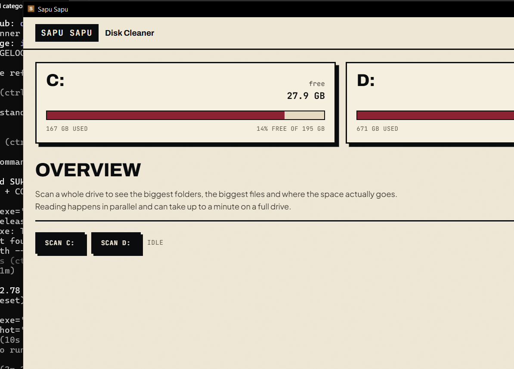

Windows disk cleaner
Clean the tank.
Named after the sapu-sapu, the janitor fish that keeps the tank glass clear. It scans C: and D:, shows where the space went, and cleans the safe caches. Preview first, real reclaim, nothing important touched.

The overview: drive gauges, biggest folders and files, breakdown by type.
What it does
Two jobs, done plainly
Where the space went
A parallel scan of a whole drive: the biggest folders, the biggest files, and a breakdown by file type, for C: and D:.
Honest numbers
Freed space is measured from the real free-space change, so a hardlinked cache reports the few gigabytes it actually frees, not an inflated total.
Preview, then clean
Nothing is deleted until you select it. Files held by a running program are skipped. Recent or uncommitted project folders are flagged unsafe.
Hands off what matters
The Windows Installer store, browser profiles, the global npm prefix, SSH and cloud keys. The guard lives in Rust, so the interface cannot override it.
Safety
Three tiers
uv, npm, pip, cargo, browser, HuggingFace, VS Code, Temp. Previewed, then cleared on confirm. They rebuild themselves.
node_modules, target, dist, build, .next, __pycache__. Per item, and flagged unsafe if touched in the last 30 days or sitting in a repo with uncommitted changes.
Installer store, active sandbox, npm global prefix, browser profiles, SSH and cloud keys. Refused even if asked.
How it works
Scan, preview, clean
Scan
Read a drive or list the caches. Sizes come back with file counts.
Preview
See exactly what will be removed and how much it holds. Pick per item.
Clean
Selected items are removed. The freed total is the real free-space change.